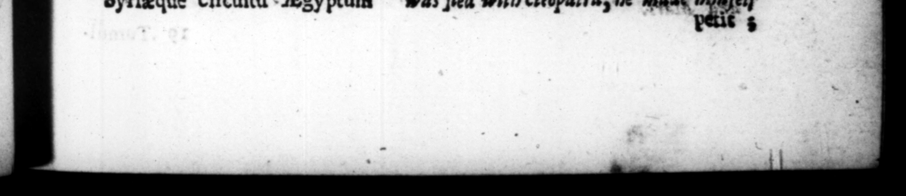

Fi. epi » quem, ox, n azubi N. 5 N legionum #i n Yindicaotem IpollaVit ſuppli ue fl — vita Ci 5 1e in per· im K. ifs, Ws hy! 4 17 ſpoietatem ſemper ay eee, variis llatam (ps t . Fo quo mags degeneraſſe eum A civili more ne a ret, te ſtamentum quod etiam de Cleopatrr liberis 3 eve Inter heredes ec re- At Run aperiendum recitanpro concione guravit. Kent tamen .hoſti neceſſitudines, amicoſque * -Ncs * ,arque og Dion Solium & T. Deng, tunc Wy coll. _nonienſibes quoque publice, quod in Antoniorum clientela antiquitus erant, gratiam fecit conJurandi * tota Italia pro partibus ſais. Nec multo poſt navali prælio apud Ac. | Tiga vicit, in ſerum dimicatione protx ut in navi victor — Ab Actio cum Samum inſulam in hiberna ſe recepiſler, turharns bei nuntlis de feditione militum premia & miſſionem poſ' centium, quos ex omni numero confetta victuria Brun diſſum premiſerat repetit I. 7 taliams tempeſtare, in tra jectu is con fli primo inter promontot i: Peloponneſi atqʒ Atoliæ, rurſus circa montes . Ceraunios, utroblque parte a, burnicarum demerſa : ſim 9 in qua 8 fuſs | enbernaculo | n , i $5280. ; Shag amplius quam tem & xx 1 deMorin” militum -ordmarenrur *Erundifii commoratus, Aſiz Eregue circuitu Egyptum * b. OA. 83775 1. "hed 0-4 parte: Nv ** of aFoirs, he 2 AD | ma * 27 777 An enemy, he \his 7 Lay rk p44 f. 7 4. 7225 time com en e. foniy e. 1200 75 in, 5 "after be 7 7 0 r [2 500 the 1 arme with $.of 4, the. er, had ur x haty, a e | E baby gray ff. ene be Ho . of 9 Dee ſus and / he . Ceraunian. ARRAY?» nd V7 in * 4 part of. his Liburnian Bip ſunk, and the 7 e bir, on bis. 1 1 ** am ah, and 5 "He aud in fn, We D 72 75 4 ae Wit! rd to exh* ions of . A 4 6 : and Syria, 4 _Jege to andrja, whither, Ab Was fed with Cleopatr, 45
